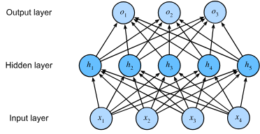
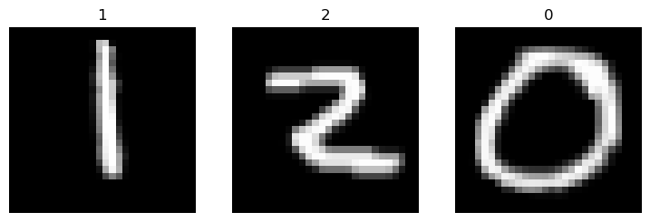
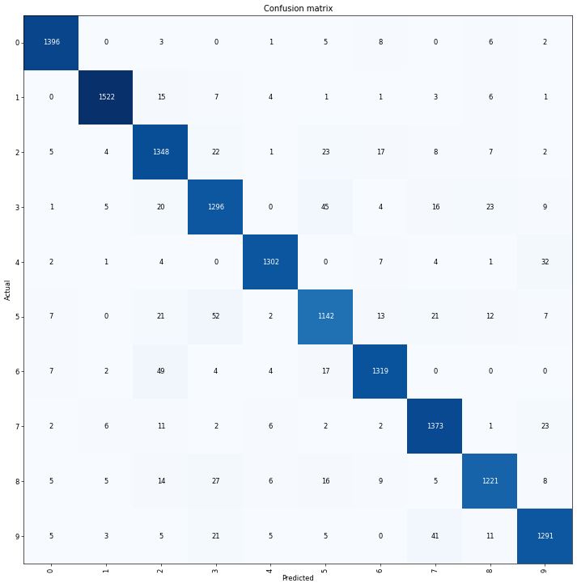
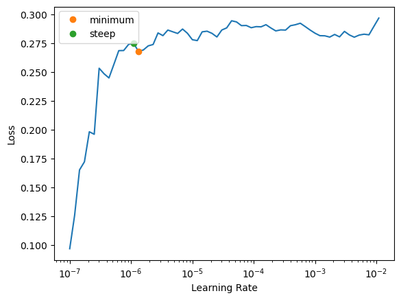

Clasificación con Multilayer Perceptrons#
Aquí introduciremos las redes profundas más sencillas, llamadas Multilayer Perceptrons (MLP). Estas consisten en múltiples capas de neuronas, cada una totalmente conectada con la capa inferior (de la que recibe entradas) y con la capa superior (a la que influye).
Los MLP superan las limitaciones de los modelos lineales al incorporar una o más capas ocultas. La forma más sencilla de hacerlo es apilar varias capas totalmente conectadas una encima de otra. Cada capa alimenta a la siguiente hasta generar las salidas. Podemos pensar en las primeras capas como la representación y en la capa final como el predictor lineal.

Implementación de Perceptrones Multicapa#
Los MLP no son mucho más complejos de implementar que los modelos lineales simples. La diferencia conceptual clave es que ahora concatenamos varias capas.
Inicialización de Parámetros del Modelo#
El conjunto de datos MNIST contiene 10 clases, y cada imagen consiste en una cuadrícula de \(28 \times 28 = 784\) píxeles en escala de grises. Ignoraremos la estructura espacial entre píxeles, de modo que lo tratamos como un problema de clasificación con 784 características de entrada y 10 clases.
Show code cell source
from fastai.vision.all import *
path = untar_data(URLs.MNIST)
Comenzaremos implementando un MLP con una capa oculta de 256 unidades. Tanto el número de capas como su ancho son ajustables. Normalmente se eligen anchos divisibles por potencias de 2 por eficiencia computacional.
Para cada capa debemos guardar una matriz de pesos y un vector de sesgo, además de reservar memoria para los gradientes de la pérdida respecto a esos parámetros.
num_hiddens = 256
num_outputs = 10
model = nn.Sequential(nn.Flatten(), nn.LazyLinear(num_hiddens),
nn.ReLU(), nn.LazyLinear(num_outputs))
Construcción del DataBlock#
Con el patrón de extracción definido, usaremos la API DataBlock de fastai para configurar el flujo de datos. DataBlock organiza y transforma los datos de forma flexible, definiendo entradas, salidas y transformaciones.
dgt = DataBlock(
blocks=(ImageBlock, CategoryBlock),
get_items=get_image_files,
get_y=parent_label,
splitter=RandomSplitter(seed=42),
batch_tfms=aug_transforms()
)
dls = dgt.dataloaders(path)
Explicación de los parámetros de DataBlock#
blocks=(ImageBlock, CategoryBlock): especifica que la entrada es una imagen y la salida una categoría.get_items=get_image_files: obtiene todas las imágenes de la ruta indicada.get_y=parent_label: extrae la etiqueta de cada imagen a partir del nombre de la carpeta contenedora.splitter=RandomSplitter(seed=42): divide aleatoriamente el conjunto en entrenamiento y validación. Elseedasegura reproducibilidad.batch_tfms=aug_transforms(size=224, min_scale=0.75): aplica transformaciones por lotes como aumentos de datos.
Validación del Flujo de Datos#
Antes de entrenar, siempre es recomendable verificar el flujo de datos. El método show_batch permite visualizar imágenes y sus etiquetas, y con summary se obtiene un desglose detallado de los pasos.
dls.show_batch(nrows=1, ncols=3)

dgt.summary(path)
Setting-up type transforms pipelines
Collecting items from C:\Users\biagi\.fastai\data\mnist_png
Found 70000 items
2 datasets of sizes 56000,14000
Setting up Pipeline: PILBase.create
Setting up Pipeline: parent_label -> Categorize -- {'vocab': None, 'sort': True, 'add_na': False}
Building one sample
Pipeline: PILBase.create
starting from
C:\Users\biagi\.fastai\data\mnist_png\training\7\48923.png
applying PILBase.create gives
PILImage mode=RGB size=28x28
Pipeline: parent_label -> Categorize -- {'vocab': None, 'sort': True, 'add_na': False}
starting from
C:\Users\biagi\.fastai\data\mnist_png\training\7\48923.png
applying parent_label gives
7
applying Categorize -- {'vocab': None, 'sort': True, 'add_na': False} gives
TensorCategory(7)
Final sample: (PILImage mode=RGB size=28x28, TensorCategory(7))
Collecting items from C:\Users\biagi\.fastai\data\mnist_png
Found 70000 items
2 datasets of sizes 56000,14000
Setting up Pipeline: PILBase.create
Setting up Pipeline: parent_label -> Categorize -- {'vocab': None, 'sort': True, 'add_na': False}
Setting up after_item: Pipeline: ToTensor
Setting up before_batch: Pipeline:
Setting up after_batch: Pipeline: IntToFloatTensor -- {'div': 255.0, 'div_mask': 1} -> Flip -- {'size': None, 'mode': 'bilinear', 'pad_mode': 'reflection', 'mode_mask': 'nearest', 'align_corners': True, 'p': 0.5} -> Brightness -- {'max_lighting': 0.2, 'p': 1.0, 'draw': None, 'batch': False}
Building one batch
Applying item_tfms to the first sample:
Pipeline: ToTensor
starting from
(PILImage mode=RGB size=28x28, TensorCategory(7))
applying ToTensor gives
(TensorImage of size 3x28x28, TensorCategory(7))
Adding the next 3 samples
No before_batch transform to apply
Collating items in a batch
Applying batch_tfms to the batch built
Pipeline: IntToFloatTensor -- {'div': 255.0, 'div_mask': 1} -> Flip -- {'size': None, 'mode': 'bilinear', 'pad_mode': 'reflection', 'mode_mask': 'nearest', 'align_corners': True, 'p': 0.5} -> Brightness -- {'max_lighting': 0.2, 'p': 1.0, 'draw': None, 'batch': False}
starting from
(TensorImage of size 4x3x28x28, TensorCategory([7, 7, 2, 2]))
applying IntToFloatTensor -- {'div': 255.0, 'div_mask': 1} gives
(TensorImage of size 4x3x28x28, TensorCategory([7, 7, 2, 2]))
applying Flip -- {'size': None, 'mode': 'bilinear', 'pad_mode': 'reflection', 'mode_mask': 'nearest', 'align_corners': True, 'p': 0.5} gives
(TensorImage of size 4x3x28x28, TensorCategory([7, 7, 2, 2]))
applying Brightness -- {'max_lighting': 0.2, 'p': 1.0, 'draw': None, 'batch': False} gives
(TensorImage of size 4x3x28x28, TensorCategory([7, 7, 2, 2]))
Entrenamiento del Modelo#
Con los datos listos, entrenamos el modelo con un Learner. Fastai calcula automáticamente gradientes, simplificando enormemente la implementación.
learn = Learner(dls, model, metrics=error_rate)
learn.fit(2)
| epoch | train_loss | valid_loss | error_rate | time |
|---|---|---|---|---|
| 0 | 0.397549 | 0.262883 | 0.077929 | 01:29 |
| 1 | 0.309400 | 0.186758 | 0.056429 | 01:24 |
Forward Propagation#
Es el proceso de calcular las variables intermedias en una red neuronal, desde la capa de entrada hasta la de salida.
Dada una entrada \(\mathbf{x}\in\mathbb{R}^d\), la capa oculta calcula
Tras aplicar la función de activación \(\phi\):
La capa de salida produce:
La pérdida para un ejemplo con etiqueta \(y\) es:
Incluyendo regularización \(l_2\) con hiperparámetro \(\lambda\):
y el objetivo regularizado:
Retropropagación#
Retropropagación es el método para calcular gradientes de los parámetros de una red neuronal recorriéndola en sentido inverso, desde la salida hasta la entrada, utilizando la regla de la cadena del cálculo diferencial. Durante el proceso se almacenan derivadas parciales intermedias.
Para funciones \(\mathsf{Y}=f(\mathsf{X})\) y \(\mathsf{Z}=g(\mathsf{Y})\), la regla de la cadena establece:
donde \(\text{prod}\) denota la multiplicación adecuada (matricial o su equivalente tensorial).
En nuestra red con parámetros \(\mathbf{W}^{(1)}\) y \(\mathbf{W}^{(2)}\), el objetivo es \(J=L+s\), donde \(L\) es la pérdida y \(s\) el término de regularización \(\ell_2\). Los primeros gradientes son directos:
A partir de aquí trabajamos hacia atrás. El gradiente respecto a la variable de la capa de salida es:
Los gradientes de la regularización son:
Así, para los parámetros de la capa de salida obtenemos:
Pasando a la capa oculta, los gradientes se propagan como:
y aplicando la derivada elemento a elemento de la función de activación:
Finalmente, para los parámetros de la capa oculta:
La Función de Pérdida de Entropía Cruzada#
En clasificación multiclase, la función de pérdida más utilizada es la entropía cruzada, también conocida como log loss.
Esta elección se justifica fácilmente mediante la estimación de máxima verosimilitud.
La función softmax nos da un vector \(\mathbf{p}\), que podemos interpretar como las probabilidades condicionales (estimadas) de cada clase, dado un input \(\mathbf{x}\), como por ejemplo \(p_1 = P(y=\textrm{gato} \mid \mathbf{x})\).
Suponemos que para un dataset con características \(\mathbf{X}\) las etiquetas \(\mathbf{Y}\) están representadas usando una codificación one-hot. Podemos comparar las estimaciones con la realidad verificando qué tan probables son las clases reales según nuestro modelo, dado \(\mathbf{x}\):
Podemos usar esta factorización porque asumimos que cada etiqueta se extrae independientemente de su respectiva distribución \(P(\mathbf{y}\mid\mathbf{x}^{(i)})\). Luego tomamos el logaritmo negativo para obtener el problema equivalente de minimizar la log-verosimilitud negativa:
donde, para cualquier par de etiqueta \(\mathbf{y}\) y predicción del modelo \(\mathbf{p}\) sobre \(C\) clases, la función de pérdida \(L\) es:
Esta ecuación se conoce comúnmente como la pérdida de entropía cruzada. Dado que \(\mathbf{y}\) es un vector one-hot de longitud \(C\), la suma sobre todas sus coordenadas \(j\) se anula salvo en un término.
El valor de \(L(\mathbf{y}, \mathbf{p})\) está acotado inferiormente por \(0\) siempre que \(\mathbf{p}\) sea un vector de probabilidades: ningún valor es mayor que \(1\), por lo que su logaritmo negativo no puede ser menor que \(0\).
\(L(\mathbf{y}, \mathbf{p}) = 0\) solo ocurre si predecimos la etiqueta real con certeza absoluta. Esto nunca sucede para ningún valor finito de los pesos, ya que llevar la salida de softmax hacia \(1\) requiere enviar la entrada correspondiente \(o_i\) a infinito (o todas las demás salidas \(o_j\) con \(j \neq i\) a menos infinito).
Incluso si nuestro modelo pudiera asignar una probabilidad de salida igual a \(0\), cualquier error cometido con esa confianza tan alta generaría una pérdida infinita (\(-\log 0 = \infty\)).
Interpretación del Modelo#
Tras entrenar, es útil analizar el rendimiento. La matriz de confusión muestra aciertos y errores, mientras que most_confused indica las clases más confundidas.
interp = ClassificationInterpretation.from_learner(learn)
interp.plot_confusion_matrix(figsize=(12,12), dpi=60)

interp.most_confused(min_val=25)
[('5', '3', 52),
('6', '2', 49),
('3', '5', 45),
('9', '7', 41),
('4', '9', 32),
('8', '3', 27)]
Mejorando el Modelo#
Tasa de Aprendizaje#
La tasa \(\eta\) controla el tamaño del paso en el descenso por gradiente:
Si es muy grande, el entrenamiento es inestable; si es muy pequeña, es lento. El learning rate finder de fastai ayuda a elegir un buen valor observando el efecto de \(\eta\) sobre la función de pérdida.
lr_min, lr_steep = learn.lr_find(suggest_funcs=(minimum, steep))
print(f"Minimum/10: {lr_min:.2e}, steepest point: {lr_steep:.2e}")
c:\Users\biagi\anaconda3\envs\book\Lib\site-packages\fastai\learner.py:53: FutureWarning: You are using `torch.load` with `weights_only=False` (the current default value), which uses the default pickle module implicitly. It is possible to construct malicious pickle data which will execute arbitrary code during unpickling (See https://github.com/pytorch/pytorch/blob/main/SECURITY.md#untrusted-models for more details). In a future release, the default value for `weights_only` will be flipped to `True`. This limits the functions that could be executed during unpickling. Arbitrary objects will no longer be allowed to be loaded via this mode unless they are explicitly allowlisted by the user via `torch.serialization.add_safe_globals`. We recommend you start setting `weights_only=True` for any use case where you don't have full control of the loaded file. Please open an issue on GitHub for any issues related to this experimental feature.
state = torch.load(file, map_location=device, **torch_load_kwargs)
Minimum/10: 1.32e-07, steepest point: 1.10e-06

Nota: Escala logarítmica: la gráfica del learning rate finder tiene una escala logarítmica, por lo que el punto medio entre \(1 \times 10^{-3}\) y \(1 \times 10^{-2}\) está entre \(3 \times 10^{-3}\) y \(4 \times 10^{-3}\). Esto se debe a que lo que más nos interesa es el orden de magnitud de la tasa de aprendizaje.
La gráfica de la tasa de aprendizaje ayuda a identificar un valor que minimice la pérdida sin que el entrenamiento diverja. En general, conviene elegir una tasa ligeramente menor al mínimo o al punto de mayor pendiente, en este caso alrededor de \(3 \times 10^{-3}\).
Early Stopping#
Las redes neuronales profundas pueden llegar a memorizar incluso etiquetas aleatorias (Zhang et al., 2021). Sin embargo, investigaciones muestran que primero se ajustan a etiquetas limpias y solo después se adaptan a las mal etiquetadas (Rolnick et al., 2017). Esto lleva a una idea importante: si un modelo se ajusta a las etiquetas correctas pero no a las ruidosas, ha logrado generalizar (Garg et al., 2021).
Esto motiva el uso de early stopping, un método clásico de regularización. En lugar de limitar directamente los pesos, se limita la duración del entrenamiento. La práctica habitual es monitorizar el error de validación en cada época y detener el entrenamiento cuando deja de mejorar más allá de un pequeño umbral durante un número determinado de épocas, conocido como criterio de paciencia.
El early stopping ofrece dos ventajas principales:
Mejor generalización en presencia de etiquetas ruidosas.
Reducción del coste y tiempo de entrenamiento, especialmente en modelos grandes que requieren configuraciones con múltiples GPU.
Cuando los datos están libres de ruido y son perfectamente separables (por ejemplo, gatos frente a perros), el early stopping rara vez mejora la generalización. Pero en casos con ruido en las etiquetas o incertidumbre inherente (como predecir resultados clínicos de pacientes), detener el entrenamiento antes de que el modelo memorice el ruido resulta esencial.
Dropout#
Un buen modelo predictivo debe generalizar bien a datos no vistos. La teoría clásica relaciona la generalización con la simplicidad, que puede significar baja dimensionalidad, normas de parámetros pequeñas (como en la regularización por decaimiento de pesos) o suavidad, es decir, insensibilidad a pequeñas perturbaciones en la entrada. Por ejemplo, los clasificadores de imágenes deben ser robustos frente a ruido leve en los píxeles.
Bishop (1995) demostró que entrenar con ruido en la entrada es equivalente a la regularización de Tikhonov, estableciendo un vínculo formal entre suavidad y robustez. Sobre esta idea, Srivastava et al. (2014) propusieron dropout, una técnica que introduce ruido en las capas internas de las redes neuronales. Durante el entrenamiento, dropout apaga aleatoriamente (pone a cero) una fracción de neuronas en cada iteración, evitando que las capas dependan en exceso de ciertos patrones de activación —un problema denominado co-adaptación.
El mecanismo es sencillo: con una probabilidad de dropout \(p\), cada activación \(h\) se reemplaza por
de forma que la esperanza matemática \(\mathbb{E}[\tilde{h}] = h\) se mantiene inalterada.
Normalmente, dropout se desactiva en la fase de prueba. Con un modelo entrenado y un nuevo ejemplo, no se eliminan nodos y no es necesario normalizar. Sin embargo, existen excepciones: algunos investigadores usan dropout en pruebas como un método heurístico para estimar la incertidumbre de las predicciones de la red neuronal. Si las predicciones coinciden en muchas ejecuciones con dropout, podemos decir que la red tiene más confianza.
Dropout se ha convertido en un método estándar de regularización en deep learning, ayudando a los modelos a evitar el sobreajuste y mejorar la generalización, especialmente al entrenar redes grandes.
Optimización Adicional: Selección de Épocas y Evitar el Sobreajuste#
Escoger el número de épocas es un equilibrio delicado. Muy pocas épocas pueden provocar underfitting, mientras que demasiadas llevan al overfitting. Algunas pautas generales son:
Empezar con pocas épocas para obtener un rendimiento de referencia.
Monitorizar la pérdida y la exactitud de validación a lo largo de las épocas para identificar cuándo comienza el sobreajuste.
Usar early stopping o validación cruzada si es necesario.
Si los recursos de entrenamiento lo permiten, puede ser útil experimentar con modelos más grandes o arquitecturas más profundas. No obstante, siempre hay que validar si la complejidad adicional mejora realmente la tarea en cuestión.